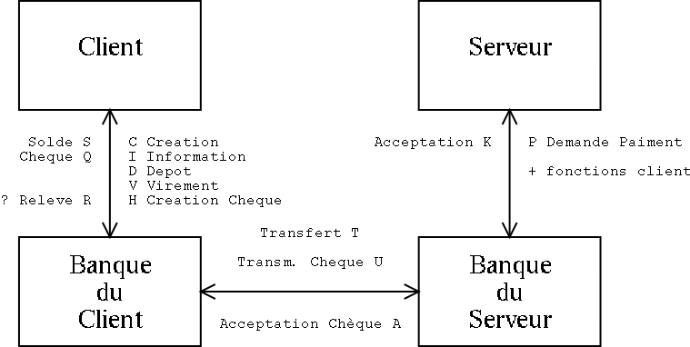

Banque : TP Unix - Janvier 2002 (c) 2002 Lai Yuk Ngan, Rémi Peyronnet
Choix techniques
Autres difficultés
Améliorations
Commentaires personnels
RFC
Le code
Nous avons décidé de stocker les informations sur les comptes et les chèques dans un tableau en mémoire pour les raisons suivantes :
Problème :
On a surtout connu beaucoup de problèmes dans la conception des transactions qui exigent l’attente des réponses. Par exemple, lorsqu’un serveur de ventes demande l’encaissement d’un chèque émis par Banque B auprès de Banque A, Banque A est obligée d’attendre un message de confirmation de la part de Banque B avant de créditer le serveur de ventes. En attendant pendant une longue durée, ses activités risquent d’être paralysées.
Solution :
Lorsque l'on a besoin d'une réponse, on a éludé le problème en se plaçant dans un fonctionnement "stateless", et donc en n'ayant pas besoin de retenir quelle réponse On attend : tous les éléments nécessaires seront contenus dans la réponse. Dans le cas contraire, il aurait fallu définir une liste chainée de réponses en attente, ou définir un thread différent (avec éventuellement une connexion TCP avec l'autre banque),...
Pour résoudre le problème de traitement des chèques :
Si le chèque n'est pas dans notre banque, nous envoyons un message à l'autre banque, puis nous continuons comme si de rien n'était. La banque se contente donc de recevoir des messages, d'y apporter une réponse immédiate, et de continuer.
Au début, nous avons eu du mal à comprendre comment utiliser les fonctions de création de sockets qui sont définies dans le poly, pages 34 et 35, surtout avec les fonctions strtok( ) et gethostbyname(). Au début, ce manque de familiarité avec certaines fonctions, les types des paramètres, et l’omission de certaines bibliothèques ont entraîné beaucoup d’erreurs de compilation.
Nous avons mis beaucoup de temps dans la conception des transactions qui exigent l’attente des réponses (notamment pour les fonctions de virement et d’encaissement des chèques) .
Exemple : on a besoin pour les chèques / virements hors de notre banque d'interroger l'autre banque et d'attendre la réponse. Solution "stateless"(voir ci-dessus).
Envoi du relevé R# au client : on a besoin de stocker l'adresse du client, ce qui nous a posé des problèmes car le client n’a plus de connexion directe avec la banque lorsque le cheque est encaissé.Solution : garder en mémoire la dernière adresse connue du client.
On aurait pu élaborer la fonction « virement » en exigeant une confirmation d’un virement réussi (que lenuméro de compte à créditer est valable) de la part de l’autre banque avant de débiter le compte émetteur.Faute de temps, nous avons décidé de faire la supposition que les banques pourraient éventuellement garder un « log » de toutes les transactions, qui permettrait la rectification de toutes erreurs. La vérification sera une amélioration importante.
Comment vérifier si toutes les banques sur le port 3000 sont en fait des banques « légitimes » ? Il y a évidemment un problème de sécurité (une banque fictive, par exemple), et ce sera une amélioration d’implémenter une procédure de vérification des banques.
C'est en fait très simple : il suffit d'analyser le fichier de log, puis de "dumper" le contenu des tables. Le contenu des tables remplace alors intégralement tous les logs précédents.
Le TP est très long pour le nombre de séances qu’on a eu, et le TP exige d’aborder beaucoup de problèmes de conception (ex. La gestion des listes de données) qui ne sont pas directement lies à la compréhension du fonctionnement des sockets/des communications. Un TP plus court et focalisé sera apprécié.
Plus d’explication sur l’utilisation de nouvelles fonctions de sockets pendant le cours sera apprécié.
Il est possible de réaliser le TP sans passer par la création de processus, ni de communication interprocessus.
[*] désigne les messages modifiés par rapport à la RFC du sujet.
[*] désigne les messages modifiés par rapport à la RFC du sujet. Messages traités : - - - - - - - - - - - - - - - - - - - - - - - - - - - - - - - C#nom#mdp // Création d'un compte D#nom#somme // Dépot sur un compte I#nom#mdp // Demande du solde du compte H#nom#mdp#somme // Demande d'émission d'un chèque P#nochq#nomclient#nomserver#mdpserver // Demande d'encaissement (cheque 1) U#nochq#nomclient#nomserver // Interrogation d'une banque (cheque 2) [*] A#nochq#montant#nomserver#nomclient // Acceptation du cheque (cheque 3) [*] V#banquedest#nomdest#nom#mdp#montant // Virement (! banquedest = numero !) M#nom#mdp // Mise à jour de l'adresse du client [*] d // Dump [*] Réponses : - - - - - - - - - - - - - - - - - - - - - - - - - - - - - - - - - - T#nomdest#somme // Transmission interbancaire d'un virement [*] Q#nochq // Cheque : format %04%06 idbanque idcheque R#nomserver#somme // Relevé de paiment d'un cheque K#nomemetteur#nochq#montant#OK // Encaisssment chèque (montant=0 <=> NOK) U#nochq#nomserveur#nomclient // Interbancaire - cf envoyés [*] A#nochq#montant#nomserveur#nomclient // Interbancaire - cf envoyés [*] Erreurs / OK : - - - - - - - - - - - - - - - - - - - - - - - - - - - - - - - - OK E#200#Banque indisponible E#201#Compte non trouvé ou somme négative E#202#Mot de passe invalide ou compte non trouvé E#203#Nom ou mot de passe vide E#204#Compte existant E#205#Somme négative ou nulle E#206#Banque non trouvée
/** Banque : TP Unix - Janvier 2002 (c) 2002 Judy Ngan, Rémi Peyronnet
Bref rapport coté programmation :
I) Les choix techniques
I.a) UDP : conseillé dans le sujet
I.b) Informations en mémoire
- écrire nos structures sur le disque revient en fait à gerer une mini base de données,
ce n'est pas le but du TP.
- beaucoup plus simple dans une première approche,
- avons cherché à éviter les listes chaînées,
- le système adopté (fichier de log réanalysé) répond parfaitement aux besoins.
I.c) Banque "stateless"
Lorsque l'on a besoin d'une réponse, on a éludé le problème en se plaçant dans un
fonctionnement "stateless", et donc en n'ayant pas besoin de retenir quelle réponse
on attend : tous les éléments nécessaires seront contenus dans la réponse.
Dans le cas contraire, il aurait fallu définir une liste chainée de réponses en
attente, ou définir un thread différent (avec eventuellement une connexion TCP
avec l'autre banque),... Un bon exemple de ce système est le traitement des chèques.
Si le chèque n'est pas dans notre banque nous envoyons un message à l'autre banque,
puis nous continuons comme si de rien n'était.
La banque se contente donc de recevoir des messages, d'y apporter une réponse immédiate,
et de continuer.
II) Difficultés rencontrées
<bcp de problemes de compilation : a inclure>
+ besoin pour les cheques / virements hors de notre banque d'interroger l'autre banque et d'attendre la réponse. solution "stateless".
+ envoi du relevé R# au client : besoin de stoquer l'adresse du client.
III) Les améliorations
* Faire une petite fonction pour compacter le fichier de log.
C'est en fait très simple : il suffit d'analyser le fichier de log, puis de "dumper"
le contenu des tables. Le contenu des tables remplace alors intégralement tous les
logs précédents.
* Inscription dynamiques de banques.
* Vérifications lors des virements.
* Travailler un peu l'aspect sécurité...
* ...
IV) Critiques du sujet
V) RFC Utilisée
[*] désigne les messages modifiés par rapport à la RFC du sujet.
Messages traités : - - - - - - - - - - - - - - - - - - - - - - - - - - - - - - -
C#nom#mdp // Création d'un compte
D#nom#somme // Dépot sur un compte
I#nom#mdp // Demande du solde du compte
H#nom#mdp#somme // Demande d'émission d'un chèque
P#nochq#nomclient#nomserver#mdpserver // Demande d'encaissement (cheque 1)
U#nochq#nomclient#nomserver // Interrogation d'une banque (cheque 2) [*]
A#nochq#montant#nomserver#nomclient // Acceptation du cheque (cheque 3) [*]
V#banquedest#nomdest#nom#mdp#montant // Virement (! banquedest = numero !)
M#nom#mdp // Mise à jour de l'adresse du client [*]
d // Dump [*]
Réponses : - - - - - - - - - - - - - - - - - - - - - - - - - - - - - - - - - -
T#nomdest#somme // Transmission interbancaire d'un virement [*]
Q#nochq // Cheque : format %04%06 idbanque idcheque
R#nomserver#somme // Relevé de paiment d'un cheque
K#nomemetteur#nochq#montant#OK // Encaisssment chèque (montant=0 <=> NOK)
U#nochq#nomserveur#nomclient // Interbancaire - cf envoyés [*]
A#nochq#montant#nomserveur#nomclient // Interbancaire - cf envoyés [*]
Erreurs / OK : - - - - - - - - - - - - - - - - - - - - - - - - - - - - - - - -
OK
E#200#Banque indisponible
E#201#Compte non trouvé ou somme négative
E#202#Mot de passe invalide ou compte non trouvé
E#203#Nom ou mot de passe vide
E#204#Compte existant
E#205#Somme négative ou nulle
E#206#Banque non trouvée
********************************************************************/
#include <stdlib.h>
#include <stdio.h>
#include <sys/types.h>
#include <sys/socket.h>
#include <sys/ioctl.h>
#include <netinet/in.h>
#include <string.h>
#include <netdb.h>
#include <arpa/inet.h>
#define PORT 3000 // Num of the port used
#define NUM_BANQUES 10 // Max number of banks
#define NUM_BANQUE 42 // Default id of the bank
#define NOM_BANQUE "TestBank" // Default name of the bank
#define COMPTES_MIN 5 // Min number of accounts
#define COMPTES_INC 10 // Increase the array of accounts by ...
#define CHEQUES_MIN 10 // Min number of cheques
#define CHEQUES_INC 10 // Increase the array of cheques by ...
#define ERR_ACCOUNT_NOT_FOUND -2 // Account not found
#define ERR_BAD_PASSWORD -3 // Bad password
#define ERR_BANK_NOT_FOUND -4 // Bank not found
// Global variables
int sd; // Socket descriptor
struct sockaddr_in address; // Address (server)
struct sockaddr_in addr_client; // Address (client)
socklen_t size; // Size of address
int numero_banque = NUM_BANQUE; // Id of the current bank
/** Is the bank working ?
* This var is used to know if we are in the restoring process or not.
* If we are restoring the previous state, we never send anything.
*/
int online = 0;
char buf[256]; // A very often used buffer...
// Structures -------------------------------------------------------------
/** Account
* This struct describe an account :
* - numero : should be the same as the index of comptes[].
* - nom : name of the customer.
* - mdp : password.
* - solde : balance of the account.
* - addr : last known address of the client,
* this is usefull for the R# message.
* compte_max describes the number of accounts.
* compte_capa describes the capacity of the array.
*/
struct compte
{
int numero;
char * nom;
char * mdp;
double solde;
struct sockaddr_in addr;
} * comptes;
int compte_max = -1;
int compte_capa = COMPTES_MIN;
/** Cheques
* This struct describes a cheques. All cheques are stored, event if
* there is no more to do with it (archive). The struct is :
* - numero : should be the same as the index of cheques[].
* - num_compte : id of the emitter account.
* - montant : amount of money on that cheque.
* - debite : is this cheque still valid ?
* cheque_max describes the current number of cheques.
* cheque_capa describes the capacity of the array.
*/
struct cheque
{
int numero;
int num_compte;
double montant;
short debite;
} * cheques;
int cheque_max = -1;
int cheque_capa = CHEQUES_MIN;
/** Bank
* This struct describe the other banks.
* @warning This array is static. See NUM_BANQUES.
* - num : id of the bank. (nothing to do with the index this time)
* - addr : network address of this bank.
* @see ajouter_banque to add a bank
*/
struct banque
{
int num;
struct sockaddr_in addr;
} banques[NUM_BANQUES];
int banque_max = -1;
// Usefull functions -------------------------------------------------------
/** Compares two string without crashing if one is NULL.
* @param s1 the first string
* @param s2 the second string
* @return the same value as strcmp(s1,s2)
*/
int strnullcmp(const char * s1, const char * s2)
{
if (s1 == NULL) { return -2; }
if (s2 == NULL) { return 2; }
return strcmp(s1, s2);
}
/** Get the account number corresponding to the name of the customer
* @param nom name of the customer
* @return the account number (ie the index in comptes[])
* or a negative value if it fails.
*/
int get_compte_numero(char * nom)
{
int i = 0;
while ( (i < compte_max) && (!(strnullcmp(nom, comptes[i].nom) == 0)) )
{
i++;
}
if (strnullcmp(nom, comptes[i].nom) == 0)
{
return i;
}
else
{
return ERR_ACCOUNT_NOT_FOUND;
}
}
/** Retrieves the number of an account according to the name of the customer
* and check the validity of the password.
* @param nom name of the customer
* @param mdp password
* @return the account number or a negative value if it fails.
* Note : if it fails, an error message is sent to the client.
*/
int numero_compte_mdp(char * nom, char * mdp)
{
int num_compte;
// Get the account number
num_compte = get_compte_numero(nom);
if ( (num_compte >= 0) )
{
if (strnullcmp(comptes[num_compte].mdp, mdp) == 0)
{
return num_compte;
}
else
{
// Bad password
sprintf(buf,"E#202#Mot de passe invalide ou compte non trouvé");
printf("> %s\n",buf);
if (online) sendto(sd, buf , 256, 0, (struct sockaddr *)&addr_client, sizeof(addr_client));
return ERR_BAD_PASSWORD;
}
}
else
{
// Erreur
sprintf(buf,"E#202#Mot de passe invalide ou compte non trouvé");
printf("> %s\n",buf);
if (online) sendto(sd, buf , 256, 0, (struct sockaddr *)&addr_client, sizeof(addr_client));
return ERR_ACCOUNT_NOT_FOUND;
}
}
/** Dumps the content of comptes and cheques to the screen.
* Debugging purpose only.
*/
void dump()
{
int i=0;
printf("Comptes ---------------------------\n");
while (i<=compte_max)
{
printf("c#%d#%s#%s#%f [%s %5i] \n",
comptes[i].numero,
comptes[i].nom,comptes[i].mdp,
comptes[i].solde,
(char *)inet_ntoa(comptes[i].addr.sin_addr),
(int)comptes[i].addr.sin_port);
i++;
}
i=0;
printf("Cheques ---------------------------\n");
while (i<=cheque_max)
{
printf("h#%d#%d#%.2f#%d\n",
cheques[i].numero,
cheques[i].num_compte,
cheques[i].montant,
cheques[i].debite);
i++;
}
printf("-------------------------------------\n");
}
/** Retrieves the index of the bank according to the id.
* @param numbanque id of the bank
* @return index of the bank in banques[] of a negative value if it fails.
* If the bank is not found, an error message is sent.
*/
int num_banque (int numbanque)
{
int i;
for (i=0;i<=banque_max;i++)
{
if (banques[i].num == numbanque) return i;
}
sprintf(buf, "E#206#Banque non trouvée");
printf("> %s\n",buf);
if (online) sendto(sd, buf , 256, 0, (struct sockaddr *)&addr_client, sizeof(addr_client));
return ERR_BANK_NOT_FOUND;
}
/** Add a bank in banques[]
* @param numero id of the bank
* @param adresse DNS address of the bank.
*/
void ajouterbanque(int numero, char * adresse)
{
struct hostent * host_server;
printf("Banque %04d : %s\n",numero,adresse);
host_server = gethostbyname(adresse);
if (host_server == NULL)
{
printf("Error : hostname");
exit(2);
}
banque_max++;
banques[banque_max].addr.sin_port = ntohs(PORT);
banques[banque_max].addr.sin_family = AF_INET;
banques[banque_max].addr.sin_addr = *(struct in_addr *)host_server->h_addr;
banques[banque_max].num = numero;
}
/** Send a message to an account
* @param buf message to be sent
* @param nom name of the customer to be sent the message
*/
void sendtoclient(char * buf, char * nom)
{
int noclient;
noclient = get_compte_numero(nom);
if (noclient >= 0)
{
if (online) sendto(sd, buf , 256, 0, (struct sockaddr *)&comptes[noclient].addr, sizeof(comptes[noclient].addr));
}
}
// Functions actions ------------------------------------------------------
/** Creation of an account
* @param nom name of the customer
* @param mdp password used
* The bank checks if the password is not empty and
* if an account with the same name does not exist.
*/
void creation(char * nom, char * mdp)
{
void * temp;
int i;
// Check the args.
if ((nom == NULL) || (mdp == NULL) || (strnullcmp(nom,"")==0) || (strnullcmp (mdp,"")==0))
{
sprintf(buf,"E#203#Nom ou mot de passe vide");
printf("> %s\n",buf);
if (online) sendto(sd, buf , 256, 0, (struct sockaddr *)&addr_client, sizeof(addr_client));
return;
}
// Check the name is not used.
i=0;
while(i <= compte_max)
{
if (strcmp(nom,comptes[i].nom) == 0)
{
sprintf(buf, "E#204#Compte existant");
printf("> %s\n",buf);
if (online) sendto(sd, buf , 256, 0, (struct sockaddr *)&addr_client, sizeof(addr_client));
return;
}
i++;
}
if (i < compte_max) return;
// Check if the array is able to add an account and reallocate if necessary
if ((compte_max+1) == compte_capa)
{
printf("[MEM] Reallocating compte table...\n");
compte_capa += COMPTES_INC;
if ( (temp = realloc(comptes,sizeof(struct compte)*compte_capa)) == NULL)
{
printf("FAILED !!");
compte_capa -= COMPTES_INC;
}
else
{
comptes = temp;
};
}
// Add the account
if (compte_max < compte_capa)
{
// Début du code utile...
compte_max++;
comptes[compte_max].numero = compte_max;
comptes[compte_max].nom = strdup(nom);
comptes[compte_max].mdp = strdup(mdp);
comptes[compte_max].solde = 0;
comptes[compte_max].addr = addr_client;
// Fin du code utile...
sprintf(buf, "OK");
printf("> %s\n",buf);
if (online) sendto(sd, buf , 256, 0, (struct sockaddr *)&addr_client, sizeof(addr_client));
}
else
{
sprintf(buf,"E#200#Banque indisponible");
printf("> %s\n",buf);
if (online) sendto(sd, buf , 256, 0, (struct sockaddr *)&addr_client, sizeof(addr_client));
}
}
/** Credit an account
* @param nom name of the customer
* @param somme amount to add
* The bank checks for negative values.
*/
void depot(char * nom, double somme)
{
int num_compte;
num_compte = get_compte_numero(nom);
if ( (num_compte != -1) && (somme > 0) )
{
comptes[num_compte].solde+=somme;
sprintf(buf,"OK");
printf("> %s\n",buf);
if (online) sendto(sd, buf , 256, 0, (struct sockaddr *)&addr_client, sizeof(addr_client));
}
else
{
// Not found or negative value.
sprintf(buf,"E#201#Compte non trouvé ou somme négative");
printf("> %s\n",buf);
if (online) sendto(sd, buf , 256, 0, (struct sockaddr *)&addr_client, sizeof(addr_client));
}
}
/** Ask for information.
* Return the customer the balance of his account
* @param nom name of the customer
* @param mdp password
*/
void consultation(char * nom, char * mdp)
{
int num_compte;
num_compte = numero_compte_mdp(nom,mdp);
if ( (num_compte >= 0) )
{
sprintf(buf, "S#%s#%.2f",NOM_BANQUE,comptes[num_compte].solde);
printf("> %s\n",buf);
if (online) sendto(sd, buf , 256, 0, (struct sockaddr *)&addr_client, sizeof(addr_client));
}
// We don't have to send an error message since numero_compte_mdp has done it.
}
/** Transfer money from an account to another.
* @warning This function is designed for an account in another bank,
* but it should work for the same bank.
* @warning No checks !
* @warning Currently, the number of the bank is used, not the name.
* @param banque id of the dest bank
* @param nomdest name of the dest customer
* @param nom name of the customer that makes the transfer
* @param mdp password of the customer
* @param somme amount of money transfered.
* The bank checks for negative values.
*/
void virement(char * banque, char * nomdest, char * nom, char * mdp, double somme)
{
int nbanque, num_compte;
// TODO : numéro ou nom de la banque ??
nbanque = num_banque(strtod(banque,NULL));
num_compte = numero_compte_mdp(nom,mdp);
if (somme <= 0)
{
sprintf(buf, "E#205#Somme négative ou nulle");
printf("> %s\n",buf);
if (online) sendto(sd, buf , 256, 0, (struct sockaddr *)&addr_client, sizeof(addr_client));
return;
}
if (num_compte >= 0)
{
if (nbanque >= 0)
{
// TODO : Debité sans vérification
comptes[num_compte].solde-=somme;
sprintf(buf, "T#%s#%f",nomdest,somme);
printf("> %s\n",buf);
if (online) sendto(sd, buf , 256, 0, (struct sockaddr *)&banques[nbanque].addr, sizeof(banques[nbanque].addr));
}
}
}
/** Update the client address
* @param nom name of the customer
* @param mdp password of the customer
* Hidden param : addr_client.
*/
void mise_a_jour(char * nom, char * mdp)
{
int ncompte;
ncompte = numero_compte_mdp(nom, mdp);
if (ncompte >= 0)
{
comptes[ncompte].addr = addr_client;
sprintf(buf, "OK");
printf("> %s\n",buf);
if (online) sendto(sd, buf , 256, 0, (struct sockaddr *)&addr_client, sizeof(addr_client));
}
}
/** Creates a cheque
* @param nom name of the customer
* @param mdp password of the customer
* @param somme amount of money
* The array of cheques is dynamically updated.
* The Cheque format is : %04%06 idbank, idcheque
*/
void creation_cheque(char * nom, char * mdp, double somme)
{
int num_compte;
void * temp;
// Checks if the array is able to add a new cheque.
if (cheque_max == cheque_capa)
{
printf("[MEM] Reallocating cheque table...\n");
cheque_capa += CHEQUES_INC;
if ( (temp = realloc(cheques,sizeof(struct cheque)*cheque_capa)) == NULL)
{
printf("FAILED !!");
cheque_capa -= CHEQUES_INC;
}
else
{
cheques = temp;
};
}
// Gets the id of the account.
num_compte = numero_compte_mdp(nom,mdp);
if ( ( num_compte >= 0 ) && ( somme > 0 ))
{
cheque_max++;
if (cheque_max < cheque_capa)
{
cheques[cheque_max].numero = cheque_max;
cheques[cheque_max].num_compte = num_compte;
cheques[cheque_max].montant = somme;
cheques[cheque_max].debite = 0;
sprintf(buf, "Q#%04d%06d",numero_banque,cheque_max);
printf("> %s\n",buf);
if (online) sendto(sd, buf , 256, 0, (struct sockaddr *)&addr_client, sizeof(addr_client));
}
else
{
sprintf(buf,"E#000#Banque indisponible");
printf("> %s\n",buf);
if (online) sendto(sd, buf , 256, 0, (struct sockaddr *)&addr_client, sizeof(addr_client));
}
}
else
{
// Erreur : compte non trouve ou some negative
}
}
/** Treat the cheque
* @param cheque number of the local cheque
* @param nomserver name of the server (not used)
* @param num_compte id of the account.
* @return the value of the cheque
* or -1 if the account is not in this bank.
* If the customer pay, we send a R# message.
*/
double traite_cheque(int cheque, char * nomserver, int num_compte)
{
if ((cheque <= cheque_max) && (cheque >= 0) )
{
if (cheques[cheque].debite == 0)
{
if (num_compte != -1) comptes[num_compte].solde+=cheques[cheque].montant;
// Avertir le client qu'il a été débité
sprintf(buf, "R#%s#%.2f",nomserver,cheques[cheque].montant);
printf("> %s\n",buf);
if (online) sendto(sd, buf , 256, 0, (struct sockaddr *)&comptes[cheques[cheque].num_compte].addr, sizeof(addr_client));
comptes[cheques[cheque].num_compte].solde-=cheques[cheque].montant;
cheques[cheque].debite = 1;
return cheques[cheque].montant;
}
else
{
return -1;
}
}
else
{
// Mauvais numero
return -1;
}
}
/** Pay a check (first step)
* @param nomclient name of the customer of the server (not used)
* @param no_cheque id of the cheque (in the %04%06 format)
* @param nomserver name of the customer (here the customer of the bank is the server...)
* @param mdp_server password of the customer (why ?)
* If the cheque belongs to this bank we treat it immediatly and return a response to the server,
* else we ask the corresponding bank.
*/
void demande_paiement_cheque(char *nomclient, char *no_cheque, char *nomserver, char *mdp_serveur)
{
int num_compte, nbanque;
int banque, cheque;
num_compte = numero_compte_mdp(nomserver,mdp_serveur);
if (num_compte>=0)
{
// Checks the bank
sscanf(no_cheque,"%04d%06d",&banque,&cheque);
if (banque == numero_banque)
{
// It is this bank !
if (traite_cheque(cheque,nomserver, num_compte) > 0)
{
// OK
sprintf(buf, "K#%s#%s#%.2f#OK",comptes[cheques[cheque].num_compte].nom,no_cheque,cheques[cheque].montant);
printf("> %s\n",buf);
if (online) sendto(sd, buf , 256, 0, (struct sockaddr *)&addr_client, sizeof(addr_client));
}
else
{
// NOK
sprintf(buf, "K#%s#%s#%.2f#NOK",comptes[cheques[cheque].num_compte].nom,no_cheque,0.0);
printf("> %s\n",buf);
if (online) sendto(sd, buf , 256, 0, (struct sockaddr *)&addr_client, sizeof(addr_client));
}
}
else
{
// Not this bank. C'est pas nous U#ncheque#nom#ip#port
nbanque=num_banque(banque);
sprintf(buf, "U#%s#%s#%s",no_cheque,nomserver,nomclient);
printf("> %s\n",buf);
if (online) sendto(sd, buf , 256, 0, (struct sockaddr *)&banques[nbanque].addr, sizeof(banques[nbanque].addr));
}
}
else
{
// Erreur : compte non trouve ou some negative
sprintf(buf, "K#Bad#0#0.00#NOK");
printf("> %s\n",buf);
if (online) sendto(sd, buf , 256, 0, (struct sockaddr *)&addr_client, sizeof(addr_client));
}
}
/** A bank asked another for a cheque (step 2)
* @param nochq id of the cheque
* @param nomserver name of the server (used in the response to the client and to the bank)
* @param nomclient name of the customer (used in the response to the client and to the bank)
* This function always sends a A# message (OK/NOK) to the bank.
*/
void interrogation_cheque(char * nochq, char * nomserver, char * nomclient)
{
int banque, cheque;
sscanf(nochq,"%04d%06d",&banque,&cheque);
if (banque == numero_banque)
{
if (traite_cheque(cheque,nomserver,-1) > 0)
{
// OK
sprintf(buf, "A#%s#%.2f#%s#%s",nochq,cheques[cheque].montant, nomserver, nomclient);
printf("> %s\n",buf);
if (online) sendto(sd, buf , 256, 0, (struct sockaddr *)&addr_client, sizeof(addr_client));
return;
}
}
// Error
sprintf(buf, "A#%s#%.2f#%s#%s#NOK",nochq,0.0,nomserver,nomclient);
printf("> %s\n",buf);
if (online) sendto(sd, buf , 256, 0, (struct sockaddr *)&addr_client, sizeof(addr_client));
}
/** A bank returned us the acceptation of a cheque (step 3)
* @param nochq id of the cheque
* @param montant amount of the cheque
* @param nomserver name of our customer
* @param nomclient name of the customer of the server (just transfered)
* This function always send a K# response to the server (OK/NOK).
* The error is detected by the montant arg, and not by OK/NOK of the A# message.
*/
void acceptation_cheque(char * nochq, double montant, char * nomserver, char * nomclient)
{
if (montant > 0)
{
depot(nomserver, montant);
sprintf(buf, "K#%s#%s#%.2f#OK",nomclient,nochq,montant);
printf("> %s\n",buf);
sendtoclient(buf,nomserver);
}
else
{
// Error
sprintf(buf, "K#%s#%s#%.2f#NOK",nomclient,nochq,montant);
printf("> %s\n",buf);
sendtoclient(buf,nomserver);
}
}
// Processing function -------------------------------------------------
/** Process a command line
* @param buf line to process
* @warning This function is not able to process several lines.
* buf <b>must</b> contain only one instruction
*/
void process(char * buf)
{
char instruction;
char *arg1, *arg2, *arg3, *arg4, *arg5;
// Process the data
if (strcmp(buf,"OK") == 0) { return; }
// Suppress the \n
if (buf[strlen(buf)-1]=='\n') buf[strlen(buf)-1]='\0';
instruction = buf[0];
if (buf[1] != '#')
{
printf("| Warning : bad format.\n");
}
// Split the line
// We _must_ use argX to have the correct order with the strtok
// We don't need (and should not!) free these arg
strtok(buf,"#");
arg1 = strtok(NULL,"#");
arg2 = strtok(NULL,"#");
arg3 = strtok(NULL,"#");
arg4 = strtok(NULL,"#");
arg5 = strtok(NULL,"#");
switch(instruction)
{
case 'C' : // Création d'un compte
// C#nom#mdp
creation(arg1, arg2);
break;
case 'T' :
case 'D' : // Dépot sur le compte
// D#nom#somme
depot(arg1, strtod(arg2,NULL));
break;
case 'I' : // Consultation du solde du compte
// I#nom#mdp
consultation(arg1, arg2);
break;
case 'H' : // Demande de création d'un chèque
// H#nom#mdp#somme
creation_cheque(arg1, arg2, strtod(arg3,NULL));
break;
case 'P' : // Dépot d'un cheque
// P#nochq#nomclient#nomserver#mdpserver
demande_paiement_cheque(arg1, arg2, arg3, arg4);
break;
case 'U' : // Interrogation dépot de cheque d'une autre banque
// U#nochq#nomclient#nomserver
interrogation_cheque(arg1,arg2,arg3);
break;
case 'A' : // Acceptation dépot chèque
// A#nochq#montant#nomserver#nomclient
acceptation_cheque(arg1,strtod(arg2,NULL),arg3,arg4);
break;
case 'V' : // Demande de virement
// V#banquedest#nomdest#nom#mdp#montant
virement(arg1,arg2,arg3,arg4,strtod(arg5,NULL));
break;
case 'M' : // Mise a jour endroit
// M#nom#mdp
mise_a_jour(arg1,arg2);
break;
case 'd' : // Dump // TEMP !
// d
dump();
break;
default :
printf("| Inconnu\n");
break;
}
}
// Fonction principale ----------------------------------------------------
/** How To use :
* ./server <numero server> <restore>
* - numero_server tells which bank we are
* - restore restores ste previous state according to server.log
*/
int main(int argn, char ** argv)
{
char buf[256], s1[20], *s2,s3[256];
int n, port;
FILE * flog;
// Read the command line
if (argn >= 2)
{
numero_banque = atoi(argv[1]);
}
printf("Banque courante : %d\n", numero_banque);
// Allocation mémoire
comptes = (struct compte *) malloc(sizeof(struct compte)*compte_capa);
cheques = (struct cheque *) malloc(sizeof(struct cheque)*cheque_capa);
// Creates the socket
sd=socket(AF_INET, SOCK_DGRAM, 0);
if (sd == -1)
{
perror("Error while creating socket.");
exit(2);
}
// Address - Bind
address.sin_port = htons(PORT);
address.sin_addr.s_addr = INADDR_ANY;
address.sin_family = AF_INET;
if ( bind (sd, (struct sockaddr *)&address, sizeof(address)) )
{
perror("Error while binding the socket.");
exit(3);
}
// Creation des banques
ajouterbanque(12, "shinji.via.ecp.fr");
ajouterbanque(42, "peyronnet.via.ecp.fr");
ajouterbanque(2,"puma.cti.ecp.fr");
//ajouterbanque(13, "localhost");
// Ouverture fichier
if (argn >= 3)
{
// We parse the server log to restore the state of the bank.
// This mecanism prevents us to manage a complicated "database" system.
flog = fopen("server.log","r+");
while (!feof(flog))
{
// Reconstructs the addr_client address.
if (fgets(buf,256,flog) == NULL) continue;
sscanf(buf,"[%s %d] (%d) $ %s",s1,&port,&n, s3);
s2=strtok(buf,"§"); s2=strtok(NULL,"§");
if (s2 != NULL)
{
s2+=1;
s2[strlen(s2)-1]='\0';
addr_client.sin_port = port;
addr_client.sin_family = AF_INET;
// Uniquement pour des Linux moooooortels : inet_aton(s1,&addr_client.sin_addr);
addr_client.sin_addr.s_addr=inet_addr(s1);
printf("(%s-%d) {%d} | %s\n",s1,port,n,s2);
process(s2);
}
else
{
printf("Pb NULL : %s",buf);
}
// TODO
}
}
else
{
flog = fopen("server.log","w");
}
printf("Banque prête.\n\n");
online = 1;
// Main loop
while (1)
{
// Receive the data
memset(buf, 0, sizeof(buf));
// Attention : pointeur sur la taille, car retour d'information
size = sizeof(addr_client);
n = recvfrom(sd, buf, sizeof(buf), 0, (struct sockaddr *)&addr_client, &size);
if (n == -1)
{
perror("Erreur");
}
else
{
// TODO : Traiter ligne par ligne, si buf est sur plusieurs lignes...
// Print the data
printf("[%s %5i] (%i) § %s\n", (char *)inet_ntoa(addr_client.sin_addr), (int)addr_client.sin_port, n, buf);
fprintf(flog,"[%s %5i] (%i) § %s\n", inet_ntoa(addr_client.sin_addr), (int)addr_client.sin_port, n, buf); fflush(flog);
process(buf);
// if ((strtok(NULL,"#") != NULL)) { printf ("extra info"); }
// Re-send the data to the client
// sendto(sd, buf, n, 0, (struct sockaddr *)&addr_client, sizeof(addr_client));
}
}
// TODO : Jamais atteint...
fclose(flog);
free(cheques);
free(comptes);
exit(0);
}
/** client udp (c) 2002 Judy Ngan, Rémi Peyronnet
* Simple client program to send data to an UDP server.
* !!! TESTING PURPOSE ONLY !!!
*/
#include <stdio.h>
#include <sys/types.h>
#include <sys/socket.h>
#include <sys/ioctl.h>
#include <netinet/in.h>
#include <netdb.h>
#include <arpa/inet.h>
#define PORT 3000
int main(int argn, char ** argv)
{
int sd;
//struct sockaddr_in address;
struct sockaddr_in addr_server;
struct hostent * host_server;
socklen_t size;
char buf[256];
int n;
if (argn < 2)
{
printf("Use : test_client <server> [--dontwait]\n");
exit(1);
}
// Creates the socket
sd=socket(AF_INET, SOCK_DGRAM, 0);
if (sd == -1)
{
perror("Error while creating socket.");
exit(2);
}
// Address - Server
host_server = gethostbyname(argv[1]);
if (host_server == NULL)
{
printf("Error : hostname");
exit(2);
}
addr_server.sin_port = ntohs(PORT);
addr_server.sin_family = AF_INET;
addr_server.sin_addr = *(struct in_addr *)host_server->h_addr;
printf("Server : %s\n",argv[1]);
while (!feof(stdin))
{
buf[0]='\0';
fscanf(stdin,"%255s",buf);
// WARNING %s s'arrete a espace ! mieux fgets(buf,255,stdin)
if (strlen(buf) != 0)
{
sendto(sd, buf, strlen(buf), 0, (struct sockaddr *)&addr_server, sizeof(addr_server));
}
}
if (argn == 2)
{
while(1)
{
size = sizeof(addr_server);
n = recvfrom(sd, buf, sizeof(buf), 0, (struct sockaddr *)&addr_server, &size);
if (n < 0)
{
//exit(1);
}
else
{
printf("%s\n",buf);
}
}
}
exit(0);
}
#
# TP Unix 17/12/2001
#
all: server client
# -lsocket -lnsl pour le cti
# -lnsl -lbind pour linux, ou rien
# et rien pour cygwin
server: server.c
gcc -o server server.c #-lnsl -ggdb
client: client.c
gcc -o client client.c #-lnsl -lbind
clean:
rm -f client
rm -f server
sun: client.c server.c
gcc -o server server.c -lsocket -lnsl -ggdb
gcc -o client client.c -lsocket -lnsl
C#a#a D#a#200 I#a#a H#a#a#100 #V#12#b#a#a#100 H#a#a#50 P#a#0042000000#a#a P#b#0012000000#a#a d#
C#b#b D#b#300 H#b#b#100
C#toto#mdp D#toto#200F I#toto#mdp D#toto#12.42 I#toto#badmdp C#server#server D#server#100 I#server#server H#toto#mdp#100 H#toto#mdp#12 H#toto#badmdp#13 H#toto#mdp#14 I#toto#mdp I#server#server P#dummy#0042000001#server#server I#toto#mdp I#server#server V#12#shinji#toto#mdp#50
C#testa#mdp C#testz#mdp C#teste#mdp C#testr#mdp C#testt#mdp C#testu#mdp C#testy#mdp C#testu#mdp C#testi#mdp C#testo#mdp C#testp#mdp C#testq#mdp C#tests#mdp C#testd#mdp C#testf#mdp C#testg#mdp C#testh#mdp C#testj#mdp C#testk#mdp C#testl#mdp C#testm#mdp C#testw#mdp C#testx#mdp I#testu#mdp
cat server.log.restart | awk -F "§ " '{ print $2 }' | ./client localhost --nowait
# # Lance le server # # rebalance le server.log # - s'il existe # - si aucun argument n'est passe LOG=server.log LOG2=server.log.restart rm -f $LOG2 mv -f $LOG $LOG2 ./server exit 0 # marche pas if test -f $LOG then if test -z $1 then echo Server restarting... rm -f $LOG2 mv -f $LOG $LOG2 #./server & ./restore.sh ./server else echo Server starting... ./server fi else echo Server starting... ./server fi